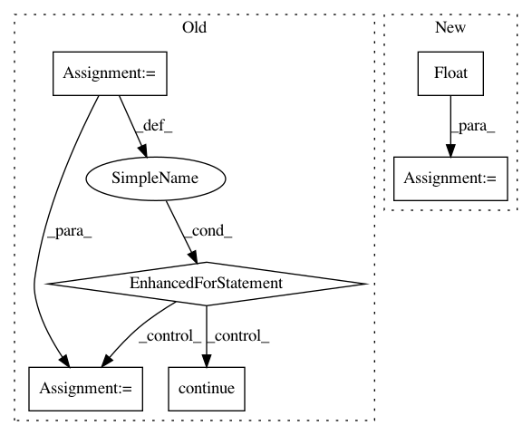

c70362d7dae523cce63c049da17f39a340139574,lazyflow/operators/opCompressedCache.py,OpCompressedCache,usedMemory,#OpCompressedCache#,264
Before Change
def usedMemory(self):
tot = 0.0
for key in self._cacheFiles.keys():
try:
group = self._cacheFiles[key]
except KeyError:
// entry was removed, ignore it
continue
if "data" in group:
ds = group["data"]
// use actual size, not number of bytes in
// *uncompressed* array
tot += get_storage_size(ds)
// tot += ds.size * self._getDtypeBytes(ds.dtype)
return tot
def fractionOfUsedMemoryDirty(self):
tot = 0.0
After Change
tot, unc = self._usedMemory()
self._compression_factor = 1.0
if tot > 0:
self._compression_factor = unc/float(tot)
return tot
def _usedMemory(self):
tot = 0.0
In pattern: SUPERPATTERN
Frequency: 3
Non-data size: 6
Instances
Project Name: ilastik/ilastik
Commit Name: c70362d7dae523cce63c049da17f39a340139574
Time: 2015-03-20
Author: webmaster@burgerdev.de
File Name: lazyflow/operators/opCompressedCache.py
Class Name: OpCompressedCache
Method Name: usedMemory
Project Name: facebookresearch/Horizon
Commit Name: 9cf8f6cdf6a2008843cb37da6e34b8d10353b0bf
Time: 2019-12-12
Author: kittipat@fb.com
File Name: ml/rl/preprocessing/sparse_to_dense.py
Class Name: PythonSparseToDenseProcessor
Method Name: process
Project Name: dmlc/dgl
Commit Name: 5d3f470b721db2a23dcc1a3880c1e31216e06233
Time: 2019-08-05
Author: expye@outlook.com
File Name: python/dgl/batched_graph.py
Class Name:
Method Name: _max_on